Memory allocation inside the kernel is not as easy as memory allocation outside the kernel. Simply put, the kernel lacks luxuries enjoyed by user-space. Unlike user-space, the kernel is not always afforded the capability to easily allocate memory. For example, the kernel cannot easily deal with memory allocation errors, and the kernel often cannot sleep. Because of these limitations, and the need for a lightweight memory allocation scheme, getting hold of memory in the kernel is more complicated than in user-space. This is not to say that, from a programmer’s point of view, kernel memory allocations are difficult—just different.
This chapter discusses the methods used to obtain memory inside the kernel. Before you can delve into the actual allocation interfaces, however, you need to understand how the kernel handles memory.
The kernel treats physical pages as the basic unit of memory management. Although the processor’s smallest addressable unit is a byte or a word, the memory management unit (MMU, the hardware that manages memory and performs virtual to physical address translations) typically deals in pages. Therefore, the MMU maintains the system’s page tables with page-sized granularity (hence their name). In terms of virtual memory, pages are the smallest unit that matters.
As you can see in Chapter 19, “Portability,” each architecture defines its own page size. Many architectures even support multiple page sizes. Most 32-bit architectures have 4KB pages, whereas most 64-bit architectures have 8KB pages. This implies that on a machine with 4KB pages and 1GB of memory, physical memory is divided into 262,144 distinct pages.
The kernel represents every physical page on the system with a struct page structure. This structure is defined in <linux/mm_types.h>. I’ve simplified the definition, removing two confusing unions that do not help color our discussion of the basics:
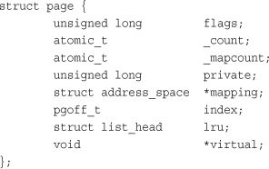
Let’s look at the important fields. The flags field stores the status of the page. Such flags include whether the page is dirty or whether it is locked in memory. Bit flags represent the various values, so at least 32 different flags are simultaneously available. The flag values are defined in <linux/page-flags.h>.
The _count field stores the usage count of the page—that is, how many references there are to this page. When this count reaches negative one, no one is using the page, and it becomes available for use in a new allocation. Kernel code should not check this field directly but instead use the function page_count(), which takes a page structure as its sole parameter. Although internally _count is negative one when the page is free, page_count() returns zero to indicate free and a positive nonzero integer when the page is in use. A page may be used by the page cache (in which case the mapping field points to the address_space object associated with this page), as private data (pointed at by private), or as a mapping in a process’s page table.
The virtual field is the page’s virtual address. Normally, this is simply the address of the page in virtual memory. Some memory (called high memory) is not permanently mapped in the kernel’s address space. In that case, this field is NULL, and the page must be dynamically mapped if needed. We discuss high memory shortly.
The important point to understand is that the page structure is associated with physical pages, not virtual pages. Therefore, what the structure describes is transient at best. Even if the data contained in the page continues to exist, it might not always be associated with the same page structure because of swapping and so on. The kernel uses this data structure to describe the associated physical page. The data structure’s goal is to describe physical memory, not the data contained therein.
The kernel uses this structure to keep track of all the pages in the system, because the kernel needs to know whether a page is free (that is, if the page is not allocated). If a page is not free, the kernel needs to know who owns the page. Possible owners include user-space processes, dynamically allocated kernel data, static kernel code, the page cache, and so on.
Developers are often surprised that an instance of this structure is allocated for each physical page in the system. They think, “What a lot of memory wasted!” Let’s look at just how bad (or good) the space consumption is from all these pages. Assume struct page consumes 40 bytes of memory, the system has 8KB physical pages, and the system has 4GB of physical memory. In that case, there are about 524,288 pages and page structures on the system. The page structures consume 20MB: perhaps a surprisingly large number in absolute terms, but only a small fraction of a percent relative to the system’s 4GB—not too high a cost for managing all the system’s physical pages.
Because of hardware limitations, the kernel cannot treat all pages as identical. Some pages, because of their physical address in memory, cannot be used for certain tasks. Because of this limitation, the kernel divides pages into different zones. The kernel uses the zones to group pages of similar properties. In particular, Linux has to deal with two shortcomings of hardware with respect to memory addressing:
• Some hardware devices can perform DMA (direct memory access) to only certain memory addresses.
• Some architectures can physically addressing larger amounts of memory than they can virtually address. Consequently, some memory is not permanently mapped into the kernel address space.
Because of these constraints, Linux has four primary memory zones:
•
ZONE_DMA—This zone contains pages that can undergo DMA.
•
ZONE_DMA32—LikeZOME_DMA, this zone contains pages that can undergo DMA. UnlikeZONE_DMA, these pages are accessible only by 32-bit devices. On some architectures, this zone is a larger subset of memory.
•
ZONE_NORMAL—This zone contains normal, regularly mapped, pages.
•
ZONE_HIGHMEM—This zone contains “high memory,” which are pages not permanently mapped into the kernel’s address space.
These zones, and two other, less notable ones, are defined in <linux/mmzone.h>.
The actual use and layout of the memory zones is architecture-dependent. For example, some architectures have no problem performing DMA into any memory address. In those architectures, ZONE_DMA is empty and ZONE_NORMAL is used for allocations regardless of their use. As a counterexample, on the x86 architecture, ISA devices cannot perform DMA into the full 32-bit address space1 because ISA devices can access only the first 16MB of physical memory. Consequently, ZONE_DMA on x86 consists of all memory in the range 0MB–16MB.
1 Similarly, some broken PCI devices can perform DMA into only a 24-bit address space.
ZONE_HIGHMEM works in the same regard. What an architecture can and cannot directly map varies. On 32-bit x86 systems, ZONE_HIGHMEM is all memory above the physical 896MB mark. On other architectures, ZONE_HIGHMEM is empty because all memory is directly mapped. The memory contained in ZONE_HIGHMEM is called high memory.2 The rest of the system’s memory is called low memory.
2 Linux’s high memory has nothing to do with high memory in DOS, which works around limitations of DOS and x86’s “real mode” processor state.
ZONE_NORMAL tends to be whatever is left over after the previous two zones claim their requisite shares. On x86, for example, ZONE_NORMAL is all physical memory from 16MB to 896MB. On other (more fortunate) architectures, ZONE_NORMAL is all available memory. Table 12.1 is a listing of each zone and its consumed pages on x86-32.
Table 12.1. Zones on x86-32
Linux partitions the system’s pages into zones to have a pooling in place to satisfy allocations as needed. For example, having a ZONE_DMA pool gives the kernel the capability to satisfy memory allocations needed for DMA. If such memory is needed, the kernel can simply pull the required number of pages from ZONE_DMA. Note that the zones do not have any physical relevance but are simply logical groupings used by the kernel to keep track of pages.
Although some allocations may require pages from a particular zone, other allocations may pull from multiple zones. For example, although an allocation for DMA-able memory must originate from ZONE_DMA, a normal allocation can come from ZONE_DMA or ZONE_NORMAL but not both; allocations cannot cross zone boundaries. The kernel prefers to satisfy normal allocations from the normal zone, of course, to save the pages in ZONE_DMA for allocations that need it. But if push comes to shove (say, if memory should get low), the kernel can dip its fingers in whatever zone is available and suitable.
Not all architectures define all zones. For example, a 64-bit architecture such as Intel’s x86-64 can fully map and handle 64-bits of memory. Thus, x86-64 has no ZONE_HIGHMEM and all physical memory is contained within ZONE_DMA and ZONE_NORMAL.
Each zone is represented by struct zone, which is defined in <linux/mmzone.h>:
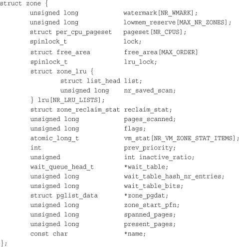
The structure is big, but only three zones are in the system and, thus, only three of these structures. Let’s look at the more important fields.
The lock field is a spin lock that protects the structure from concurrent access. Note that it protects just the structure and not all the pages that reside in the zone. A specific lock does not protect individual pages, although parts of the kernel may lock the data that happens to reside in said pages.
The watermark array holds the minimum, low, and high watermarks for this zone. The kernel uses watermarks to set benchmarks for suitable per-zone memory consumption, varying its aggressiveness as the watermarks vary vis-à-vis free memory.
The name field is, unsurprisingly, a NULL-terminated string representing the name of this zone. The kernel initializes this value during boot in mm/page_alloc.c, and the three zones are given the names DMA, Normal, and HighMem.
Now with an understanding of how the kernel manages memory—via pages, zones, and so on—let’s look at the interfaces the kernel implements to enable you to allocate and free memory within the kernel.
The kernel provides one low-level mechanism for requesting memory, along with several interfaces to access it. All these interfaces allocate memory with page-sized granularity and are declared in <linux/gfp.h>. The core function is
struct page * alloc_pages(gfp_t gfp_mask, unsigned int order)
This allocates 2order (that is, 1 << order) contiguous physical pages and returns a pointer to the first page’s page structure; on error it returns NULL. We look at the gfp_t type and gfp_mask parameter in a later section. You can convert a given page to its logical address with the function
void * page_address(struct page *page)
This returns a pointer to the logical address where the given physical page currently resides. If you have no need for the actual struct page, you can call
unsigned long __get_free_pages(gfp_t gfp_mask, unsigned int order)
This function works the same as alloc_pages(), except that it directly returns the logical address of the first requested page. Because the pages are contiguous, the other pages simply follow from the first.
If you need only one page, two functions are implemented as wrappers to save you a bit of typing:
struct page * alloc_page(gfp_t gfp_mask)
unsigned long __get_free_page(gfp_t gfp_mask)
These functions work the same as their brethren but pass zero for the order (20 = one page).
If you need the returned page filled with zeros, use the function
unsigned long get_zeroed_page(unsigned int gfp_mask)
This function works the same as __get_free_page(), except that the allocated page is then zero-filled—every bit of every byte is unset. This is useful for pages given to user-space because the random garbage in an allocated page is not so random; it might contain sensitive data. All data must be zeroed or otherwise cleaned before it is returned to user-space to ensure system security is not compromised. Table 12.2 is a listing of all the low-level page allocation methods.
Table 12.2. Low-Level Page Allocation Methods
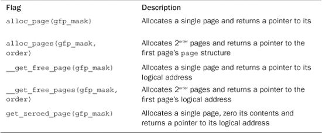
A family of functions enables you to free allocated pages when you no longer need them:
void __free_pages(struct page *page, unsigned int order)
void free_pages(unsigned long addr, unsigned int order)
void free_page(unsigned long addr)
You must be careful to free only pages you allocate. Passing the wrong struct page or address, or the incorrect order, can result in corruption. Remember, the kernel trusts itself. Unlike with user-space, the kernel will happily hang itself if you ask it.
Let’s look at an example. Here, we want to allocate eight pages:
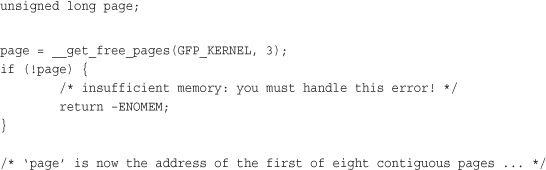
And here we free the eight pages, after we are done using them:
free_pages(page, 3);
/*
* our pages are now freed and we should no
* longer access the address stored in 'page'
*/
The GFP_KERNEL parameter is an example of a gfp_mask flag. It is discussed shortly.
Make note of the error checking after the call to __get_free_pages(). A kernel allocation can fail, and your code must check for and handle such errors. This might mean unwinding everything you have done thus far. It therefore often makes sense to allocate your memory at the start of the routine to make handling the error easier. Otherwise, by the time you attempt to allocate memory, it may be rather hard to bail out.
These low-level page functions are useful when you need page-sized chunks of physically contiguous pages, especially if you need exactly a single page or two. For more general byte-sized allocations, the kernel provides kmalloc().
kmalloc()The kmalloc() function’s operation is similar to that of user-space’s familiar malloc() routine, with the exception of the additional flags parameter. The kmalloc() function is a simple interface for obtaining kernel memory in byte-sized chunks. If you need whole pages, the previously discussed interfaces might be a better choice. For most kernel allocations, however, kmalloc() is the preferred interface.
The function is declared in <linux/slab.h>:
void * kmalloc(size_t size, gfp_t flags)
The function returns a pointer to a region of memory that is at least
size bytes in length.3 The region of memory allocated is physically contiguous. On error, it returns NULL. Kernel allocations always succeed, unless an insufficient amount of memory is available. Thus, you must check for NULL after all calls to kmalloc() and handle the error appropriately.
3
kmalloc() may allocate more than you asked, although you have no way of knowing how much more! Because at its heart the kernel allocator is page-based, some allocations may be rounded up to fit within the available memory. The kernel never returns less memory than requested. If the kernel is unable to find at least the requested amount, the allocation fails and the function returns NULL.
Let’s look at an example. Assume you need to dynamically allocate enough room for a fictional dog structure:
struct dog *p;
p = kmalloc(sizeof(struct dog), GFP_KERNEL);
if (!p)
/* handle error ... */
If the kmalloc() call succeeds, p now points to a block of memory that is at least the requested size. The GFP_KERNEL flag specifies the behavior of the memory allocator while trying to obtain the memory to return to the caller of kmalloc().
gfp_mask FlagsYou’ve seen various examples of allocator flags in both the low-level page allocation functions and kmalloc(). Now it’s time to discuss these flags in depth. Flags are represented by the gfp_t type, which is defined in <linux/types.h> as an unsigned int. gfp stands for __get_free_pages(), one of the memory allocation routines we discussed earlier.
The flags are broken up into three categories: action modifiers, zone modifiers, and types. Action modifiers specify how the kernel is supposed to allocate the requested memory. In certain situations, only certain methods can be employed to allocate memory. For example, interrupt handlers must instruct the kernel not to sleep (because interrupt handlers cannot reschedule) in the course of allocating memory. Zone modifiers specify from where to allocate memory. As you saw earlier in this chapter, the kernel divides physical memory into multiple zones, each of which serves a different purpose. Zone modifiers specify from which of these zones to allocate. Type flags specify a combination of action and zone modifiers as needed by a certain type of memory allocation. Type flags simplify the specification of multiple modifiers; instead of providing a combination of action and zone modifiers, you can specify just one type flag. The GFP_KERNEL is a type flag, which is used for code in process context inside the kernel. Let’s look at the flags.
All the flags, the action modifiers included, are declared in <linux/gfp.h>. The file <linux/slab.h> includes this header, however, so you often need not include it directly. In reality, you usually use only the type modifiers, which are discussed later. Nonetheless, it is good to have an understanding of these individual flags. Table 12.3 is a list of the action modifiers.
Table 12.3. Action Modifiers
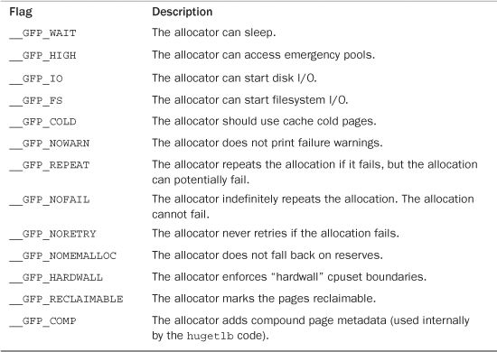
These allocations can be specified together. For example
ptr = kmalloc(size, __GFP_WAIT | __GFP_IO | __GFP_FS);
This call instructs the page allocator (ultimately alloc_pages()) that the allocation can block, perform I/O, and perform filesystem operations, if needed. This enables the kernel great freedom in how it can find the free memory to satisfy the allocation.
Most allocations specify these modifiers but do so indirectly by way of the type flags we discuss shortly. Don’t worry—you won’t have to figure out which of these weird flags to use every time you allocate memory!
Zone modifiers specify from which memory zone the allocation should originate. Normally, allocations can be fulfilled from any zone. The kernel prefers ZONE_NORMAL, however, to ensure that the other zones have free pages when they are needed.
There are only three zone modifiers because there are only three zones other than ZONE_NORMAL (which is where, by default, allocations originate). Table 12.4 is a listing of the zone modifiers.
Table 12.4. Zone Modifiers
Specifying one of these three flags modifies the zone from which the kernel attempts to satisfy the allocation. The __GFP_DMA flag forces the kernel to satisfy the request from ZONE_DMA. This flag says, I absolutely must have memory into which I can perform DMA. Conversely, the __GFP_HIGHMEM flag instructs the allocator to satisfy the request from either ZONE_NORMAL or (preferentially) ZONE_HIGHMEM. This flag says, I can use high memory, so I can be a doll and hand you back some of that, but normal memory works, too. If neither flag is specified, the kernel fulfills the allocation from either ZONE_DMA or ZONE_NORMAL, with a strong preference to satisfy the allocation from ZONE_NORMAL.
You cannot specify __GFP_HIGHMEM to either __get_free_pages() or kmalloc(). Because these both return a logical address, and not a page structure, it is possible that these functions would allocate memory not currently mapped in the kernel’s virtual address space and, thus, does not have a logical address. Only alloc_pages() can allocate high memory. The majority of your allocations, however, will not specify a zone modifier because ZONE_NORMAL is sufficient.
The type flags specify the required action and zone modifiers to fulfill a particular type of transaction. Therefore, kernel code tends to use the correct type flag and not specify the myriad of other flags it might need. This is both simpler and less error-prone. Table 12.5 is a list of the type flags, and Table 12.6 shows which modifiers are associated with each type flag.
Table 12.5. Type Flags
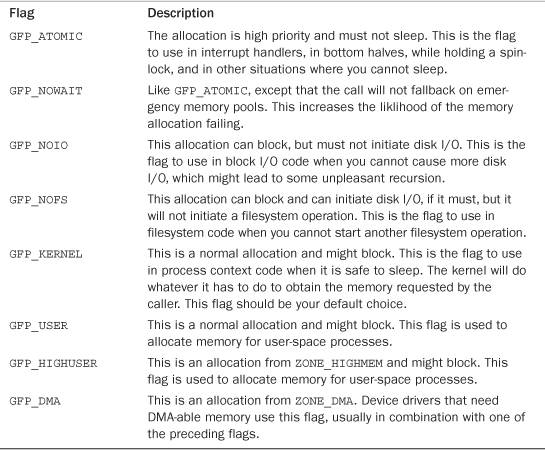
Table 12.6. Modifiers Behind Each Type Flag
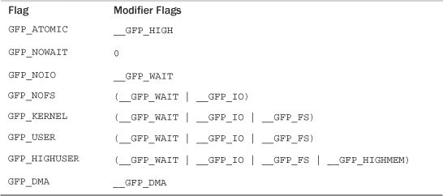
Let’s look at the frequently used flags and when and why you might need them. The vast majority of allocations in the kernel use the GFP_KERNEL flag. The resulting allocation is a normal priority allocation that might sleep. Because the call can block, this flag can be used only from process context that can safely reschedule. (That is, no locks are held and so on.) Because this flag does not make any stipulations as to how the kernel may obtain the requested memory, the memory allocation has a high probability of succeeding.
On the far other end of the spectrum is the GFP_ATOMIC flag. Because this flag specifies a memory allocation that cannot sleep, the allocation is restrictive in the memory it can obtain for the caller. If no sufficiently sized contiguous chunk of memory is available, the kernel is not likely to free memory because it cannot put the caller to sleep. Conversely, the GFP_KERNEL allocation can put the caller to sleep to swap inactive pages to disk, flush dirty pages to disk, and so on. Because GFP_ATOMIC cannot perform any of these actions, it has less of a chance of succeeding (at least when memory is low) compared to GFP_KERNEL allocations. Nonetheless, the GFP_ATOMIC flag is the only option when the current code cannot sleep, such as with interrupt handlers, softirqs, and tasklets.
In between these two flags are GFP_NOIO and GFP_NOFS. Allocations initiated with these flags might block, but they refrain from performing certain other operations. A GFP_NOIO allocation does not initiate any disk I/O whatsoever to fulfill the request. On the other hand, GFP_NOFS might initiate disk I/O, but does not initiate filesystem I/O. Why might you need these flags? They are needed for certain low-level block I/O or filesystem code, respectively. Imagine if a common path in the filesystem code allocated memory without the GFP_NOFS flag. The allocation could result in more filesystem operations, which would then beget other allocations and, thus, more filesystem operations! This could continue indefinitely. Code such as this that invokes the allocator must ensure that the allocator also does not execute it, or else the allocation can create a deadlock. Not surprisingly, the kernel uses these two flags only in a handful of places.
The GFP_DMA flag is used to specify that the allocator must satisfy the request from ZONE_DMA. This flag is used by device drivers, which need DMA-able memory for their devices. Normally, you combine this flag with the GFP_ATOMIC or GFP_KERNEL flag.
In the vast majority of the code that you write, you use either GFP_KERNEL or GFP_ATOMIC. Table 12.7 is a list of the common situations and the flags to use. Regardless of the allocation type, you must check for and handle failures.
Table 12.7. Which Flag to Use When
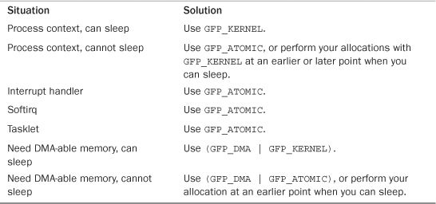
kfree()The counterpart to kmalloc() is kfree(), which is declared in <linux/slab.h>:
void kfree(const void *ptr)
The kfree() method frees a block of memory previously allocated with kmalloc(). Do not call this function on memory not previously allocated with kmalloc(), or on memory that has already been freed. Doing so is a bug, resulting in bad behavior such as freeing memory belonging to another part of the kernel. As in user-space, be careful to balance your allocations with your deallocations to prevent memory leaks and other bugs. Note that calling kfree(NULL) is explicitly checked for and safe.
Let’s look at an example of allocating memory in an interrupt handler. In this example, an interrupt handler wants to allocate a buffer to hold incoming data. The preprocessor macro BUF_SIZE is the size in bytes of this desired buffer, which is presumably larger than just a couple of bytes.
char *buf;
buf = kmalloc(BUF_SIZE, GFP_ATOMIC);
if (!buf)
/* error allocating memory ! */
Later, when you no longer need the memory, do not forget to free it:
kfree(buf);
vmalloc()The vmalloc() function works in a similar fashion to kmalloc(), except it allocates memory that is only virtually contiguous and not necessarily physically contiguous. This is how a user-space allocation function works: The pages returned by malloc() are contiguous within the virtual address space of the processor, but there is no guarantee that they are actually contiguous in physical RAM. The kmalloc() function guarantees that the pages are physically contiguous (and virtually contiguous). The vmalloc() function ensures only that the pages are contiguous within the virtual address space. It does this by allocating potentially noncontiguous chunks of physical memory and “fixing up” the page tables to map the memory into a contiguous chunk of the logical address space.
For the most part, only hardware devices require physically contiguous memory allocations. On many architectures, hardware devices live on the other side of the memory management unit and, thus, do not understand virtual addresses. Consequently, any regions of memory that hardware devices work with must exist as a physically contiguous block and not merely a virtually contiguous one. Blocks of memory used only by software—for example, process-related buffers—are fine using memory that is only virtually contiguous. In your programming, you never know the difference. All memory appears to the kernel as logically contiguous.
Despite the fact that physically contiguous memory is required in only certain cases, most kernel code uses kmalloc() and not vmalloc() to obtain memory. Primarily, this is for performance. The vmalloc() function, to make nonphysically contiguous pages contiguous in the virtual address space, must specifically set up the page table entries. Worse, pages obtained via vmalloc() must be mapped by their individual pages (because they are not physically contiguous), which results in much greater TLB4 thrashing than you see when directly mapped memory is used. Because of these concerns, vmalloc() is used only when absolutely necessary—typically, to obtain large regions of memory. For example, when modules are dynamically inserted into the kernel, they are loaded into memory created via vmalloc().
4 The TLB (translation lookaside buffer) is a hardware cache used by most architectures to cache the mapping of virtual addresses to physical addresses. This greatly improves the performance of the system, because most memory access is done via virtual addressing.
The vmalloc() function is declared in <linux/vmalloc.h> and defined in mm/vmalloc.c. Usage is identical to user-space’s malloc():
void * vmalloc(unsigned long size)
The function returns a pointer to at least size bytes of virtually contiguous memory. On error, the function returns NULL. The function might sleep and thus cannot be called from interrupt context or other situations in which blocking is not permissible.
To free an allocation obtained via vmalloc(), use
void vfree(const void *addr)
This function frees the block of memory beginning at addr that was previously allocated via vmalloc(). The function can also sleep and, thus, cannot be called from interrupt context. It has no return value.
Usage of these functions is simple:
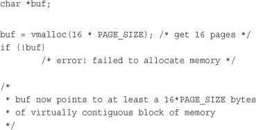
After you finish with the memory, make sure to free it by using
vfree(buf);
Allocating and freeing data structures is one of the most common operations inside any kernel. To facilitate frequent allocations and deallocations of data, programmers often introduce free lists. A free list contains a block of available, already allocated, data structures. When code requires a new instance of a data structure, it can grab one of the structures off the free list rather than allocate the sufficient amount of memory and set it up for the data structure. Later, when the data structure is no longer needed, it is returned to the free list instead of deallocated. In this sense, the free list acts as an object cache, caching a frequently used type of object.
One of the main problems with free lists in the kernel is that there exists no global control. When available memory is low, there is no way for the kernel to communicate to every free list that it should shrink the sizes of its cache to free up memory. The kernel has no understanding of the random free lists at all. To remedy this, and to consolidate code, the Linux kernel provides the slab layer (also called the slab allocator). The slab layer acts as a generic data structure-caching layer.
The concept of a slab allocator was first implemented in Sun Microsystem’s SunOS 5.4 operating system.5 The Linux data structure caching layer shares the same name and basic design.
5 And subsequently documented in Bonwick, J. “The Slab Allocator: An Object-Caching Kernel Memory Allocator,” USENIX, 1994.
The slab layer attempts to leverage several basic tenets:
• Frequently used data structures tend to be allocated and freed often, so cache them.
• Frequent allocation and deallocation can result in memory fragmentation (the inability to find large contiguous chunks of available memory). To prevent this, the cached free lists are arranged contiguously. Because freed data structures return to the free list, there is no resulting fragmentation.
• The free list provides improved performance during frequent allocation and deallocation because a freed object can be immediately returned to the next allocation.
• If the allocator is aware of concepts such as object size, page size, and total cache size, it can make more intelligent decisions.
• If part of the cache is made per-processor (separate and unique to each processor on the system), allocations and frees can be performed without an SMP lock.
• If the allocator is NUMA-aware, it can fulfill allocations from the same memory node as the requestor.
• Stored objects can be colored to prevent multiple objects from mapping to the same cache lines.
The slab layer in Linux was designed and implemented with these premises in mind.
The slab layer divides different objects into groups called caches, each of which stores a different type of object. There is one cache per object type. For example, one cache is for process descriptors (a free list of task_struct structures), whereas another cache is for inode objects (struct inode). Interestingly, the kmalloc() interface is built on top of the slab layer, using a family of general purpose caches.
The caches are then divided into slabs (hence the name of this subsystem). The slabs are composed of one or more physically contiguous pages. Typically, slabs are composed of only a single page. Each cache may consist of multiple slabs.
Each slab contains some number of objects, which are the data structures being cached. Each slab is in one of three states: full, partial, or empty. A full slab has no free objects. (All objects in the slab are allocated.) An empty slab has no allocated objects. (All objects in the slab are free.) A partial slab has some allocated objects and some free objects. When some part of the kernel requests a new object, the request is satisfied from a partial slab, if one exists. Otherwise, the request is satisfied from an empty slab. If there exists no empty slab, one is created. Obviously, a full slab can never satisfy a request because it does not have any free objects. This strategy reduces fragmentation.
Let’s look at the inode structure as an example, which is the in-memory representation of a disk inode (see Chapter 13, “The Virtual Filesystem”). These structures are frequently created and destroyed, so it makes sense to manage them via the slab allocator. Thus, struct inode is allocated from the inode_cachep cache. (Such a naming convention is standard.) This cache is made up of one or more slabs—probably a lot of slabs because there are a lot of objects. Each slab contains as many struct inode objects as possible. When the kernel requests a new inode structure, the kernel returns a pointer to an already allocated, but unused structure from a partial slab or, if there is no partial slab, an empty slab. When the kernel is done using the inode object, the slab allocator marks the object as free. Figure 12.1 diagrams the relationship between caches, slabs, and objects.
Figure 12.1. The relationship between caches, slabs, and objects.
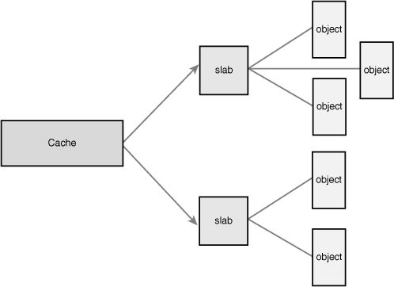
Each cache is represented by a kmem_cache structure. This structure contains three lists—slabs_full, slabs_partial, and slabs_empty—stored inside a kmem_list3 structure, which is defined in mm/slab.c. These lists contain all the slabs associated with the cache. A slab descriptor, struct slab, represents each slab:
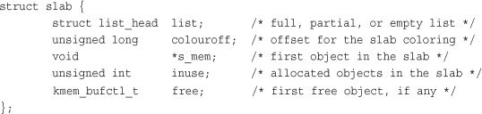
Slab descriptors are allocated either outside the slab in a general cache or inside the slab itself, at the beginning. The descriptor is stored inside the slab if the total size of the slab is sufficiently small, or if internal slack space is sufficient to hold the descriptor.
The slab allocator creates new slabs by interfacing with the low-level kernel page allocator via __get_free_pages():
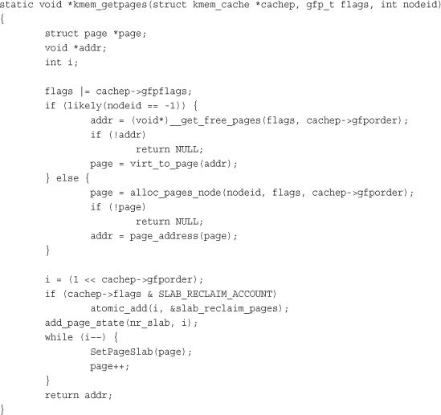
This function uses __get_free_pages() to allocate memory sufficient to hold the cache. The first parameter to this function points to the specific cache that needs more pages. The second parameter points to the flags given to __get_free_pages(). Note how this value is binary OR’ed against another value. This adds default flags that the cache requires to the flags parameter. The power-of-two size of the allocation is stored in cachep->gfporder. The previous function is a bit more complicated than one might expect because code that makes the allocator NUMA-aware. When nodeid is not negative one, the allocator attempts to fulfill the allocation from the same memory node that requested the allocation. This provides better performance on NUMA systems, in which accessing memory outside your node results in a performance penalty.
For educational purposes, we can ignore the NUMA-aware code and write a simple kmem_getpages():
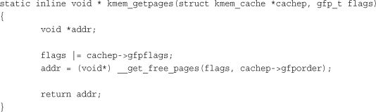
Memory is then freed by kmem_freepages(), which calls free_pages() on the given cache’s pages. Of course, the point of the slab layer is to refrain from allocating and freeing pages. In turn, the slab layer invokes the page allocation function only when there does not exist any partial or empty slabs in a given cache. The freeing function is called only when available memory grows low and the system is attempting to free memory, or when a cache is explicitly destroyed.
The slab layer is managed on a per-cache basis through a simple interface, which is exported to the entire kernel. The interface enables the creation and destruction of new caches and the allocation and freeing of objects within the caches. The sophisticated management of caches and the slabs within is entirely handled by the internals of the slab layer. After you create a cache, the slab layer works just like a specialized allocator for the specific type of object.
A new cache is created via
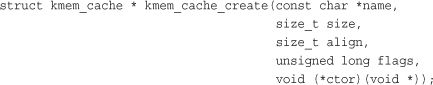
The first parameter is a string storing the name of the cache. The second parameter is the size of each element in the cache. The third parameter is the offset of the first object within a slab. This is done to ensure a particular alignment within the page. Normally, zero is sufficient, which results in the standard alignment. The flags parameter specifies optional settings controlling the cache’s behavior. It can be zero, specifying no special behavior, or one or more of the following flags OR’ed together:
•
SLAB_HWCACHE_ALIGN—This flag instructs the slab layer to align each object within a slab to a cache line. This prevents “false sharing” (two or more objects mapping to the same cache line despite existing at different addresses in memory). This improves performance but comes at a cost of increased memory footprint because the stricter alignment results in more wasted slack space. How large the increase in memory consumption is depends on the size of the objects and how they naturally align with respect to the system’s cache lines. For frequently used caches in performance-critical code, setting this option is a good idea; otherwise, think twice.
•
SLAB_POISON—This flag causes the slab layer to fill the slab with a known value (a5a5a5a5). This is called poisoning and is useful for catching access to uninitialized memory.
•
SLAB_RED_ZONE—This flag causes the slab layer to insert “red zones” around the allocated memory to help detect buffer overruns.
•
SLAB_PANIC—This flag causes the slab layer to panic if the allocation fails. This flag is useful when the allocation must not fail, as in, say, allocating the VMA structure cache (see Chapter 15, “The Process Address Space”) during bootup.
•
SLAB_CACHE_DMA—This flag instructs the slab layer to allocate each slab in DMA-able memory. This is needed if the allocated object is used for DMA and must reside inZONE_DMA. Otherwise, you do not need this and you should not set it.
The final parameter, ctor, is a constructor for the cache. The constructor is called whenever new pages are added to the cache. In practice, caches in the Linux kernel do not often utilize a constructor. In fact, there once was a deconstructor parameter, too, but it was removed because no kernel code used it. You can pass NULL for this parameter.
On success, kmem_cache_create() returns a pointer to the created cache. Otherwise, it returns NULL. This function must not be called from interrupt context because it can sleep.
To destroy a cache, call
int kmem_cache_destroy(struct kmem_cache *cachep)
As the name implies, this function destroys the given cache. It is generally invoked from module shutdown code in modules that create their own caches. It must not be called from interrupt context because it may sleep. The caller of this function must ensure two conditions are true prior to invoking this function:
• All slabs in the cache are empty. Indeed, if an object in one of the slabs were still allocated and in use, how could the cache be destroyed?
• No one accesses the cache during (and obviously after) a call to
kmem_cache_destroy(). The caller must ensure this synchronization.
On success, the function returns zero; it returns nonzero otherwise.
After a cache is created, an object is obtained from the cache via
void * kmem_cache_alloc(struct kmem_cache *cachep, gfp_t flags)
This function returns a pointer to an object from the given cache cachep. If no free objects are in any slabs in the cache, and the slab layer must obtain new pages via kmem_getpages(), the value of flags is passed to __get_free_pages(). These are the same flags we looked at earlier. You probably want GFP_KERNEL or GFP_ATOMIC.
To later free an object and return it to its originating slab, use the function
void kmem_cache_free(struct kmem_cache *cachep, void *objp)
This marks the object objp in cachep as free.
Let’s look at a real-life example that uses the task_struct structure (the process descriptor). This code, in slightly more complicated form, is in kernel/fork.c.
First, the kernel has a global variable that stores a pointer to the task_struct cache:
struct kmem_cache *task_struct_cachep;
During kernel initialization, in fork_init(), defined in kernel/fork.c, the cache is created:
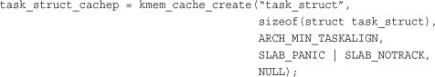
This creates a cache named task_struct, which stores objects of type struct task_struct. The objects are created with an offset of ARCH_MIN_TASKALIGN bytes within the slab. This preprocessor definition is an architecture-specific value. It is usually defined as L1_CACHE_BYTES—the size in bytes of the L1 cache. There is no constructor. Note that the return value is not checked for NULL, which denotes failure, because the SLAB_PANIC flag was given. If the allocation fails, the slab allocator calls panic(). If you do not provide this flag, you must check the return! The SLAB_PANIC flag is used here because this is a requisite cache for system operation. (The machine is not much good without process descriptors.)
Each time a process calls fork(), a new process descriptor must be created (recall Chapter 3, “Process Management”). This is done in dup_task_struct(), which is called from do_fork():
struct task_struct *tsk;
tsk = kmem_cache_alloc(task_struct_cachep, GFP_KERNEL);
if (!tsk)
return NULL;
After a task dies, if it has no children waiting on it, its process descriptor is freed and returned to the task_struct_cachep slab cache. This is done in free_task_struct() (in which tsk is the exiting task):
kmem_cache_free(task_struct_cachep, tsk);
Because process descriptors are part of the core kernel and always needed, the task_struct_cachep cache is never destroyed. If it were, however, you would destroy the cache via
int err;
err = kmem_cache_destroy(task_struct_cachep);
if (err)
/* error destroying cache */
Easy enough? The slab layer handles all the low-level alignment, coloring, allocations, freeing, and reaping during low-memory conditions. If you frequently create many objects of the same type, consider using the slab cache. Definitely do not implement your own free list!
In user-space, allocations such as some of the examples discussed thus far could have occurred on the stack because we knew the size of the allocation a priori. User-space is afforded the luxury of a large, dynamically growing stack, whereas the kernel has no such luxury—the kernel’s stack is small and fixed. When each process is given a small, fixed stack, memory consumption is minimized, and the kernel need not burden itself with stack management code.
The size of the per-process kernel stacks depends on both the architecture and a compile-time option. Historically, the kernel stack has been two pages per process. This is usually 8KB for 32-bit architectures and 16KB for 64-bit architectures because they usually have 4KB and 8KB pages, respectively.
Early in the 2.6 kernel series, however, an option was introduced to move to single-page kernel stacks. When enabled, each process is given only a single page—4KB on 32-bit architectures and 8KB on 64-bit architectures. This was done for two reasons. First, it results in a page with less memory consumption per process. Second and most important is that as uptime increases, it becomes increasingly hard to find two physically contiguous unallocated pages. Physical memory becomes fragmented, and the resulting VM pressure from allocating a single new process is expensive.
There is one more complication. Keep with me: We have almost grasped the entire universe of knowledge with respect to kernel stacks. Now, each process’s entire call chain has to fit in its kernel stack. Historically, however, interrupt handlers also used the kernel stack of the process they interrupted, thus they too had to fit. This was efficient and simple, but it placed even tighter constraints on the already meager kernel stack. When the stack moved to only a single page, interrupt handlers no longer fit.
To rectify this problem, the kernel developers implemented a new feature: interrupt stacks. Interrupt stacks provide a single per-processor stack used for interrupt handlers. With this option, interrupt handlers no longer share the kernel stack of the interrupted process. Instead, they use their own stacks. This consumes only a single page per processor.
To summarize, kernel stacks are either one or two pages, depending on compile-time configuration options. The stack can therefore range from 4KB to 16KB. Historically, interrupt handlers shared the stack of the interrupted process. When single page stacks are enabled, interrupt handlers are given their own stacks. In any case, unbounded recursion and alloca() are obviously not allowed.
Okay. Got it?
In any given function, you must keep stack usage to a minimum. There is no hard and fast rule, but you should keep the sum of all local (that is, automatic) variables in a particular function to a maximum of a couple hundred bytes. Performing a large static allocation on the stack, such as of a large array or structure, is dangerous. Otherwise, stack allocations are performed in the kernel just as in user-space. Stack overflows occur silently and will undoubtedly result in problems. Because the kernel does not make any effort to manage the stack, when the stack overflows, the excess data simply spills into whatever exists at the tail end of the stack. The first thing to eat it is the thread_info structure. (Recall from Chapter 3 that this structure is allocated at the end of each process’s kernel stack.) Beyond the stack, any kernel data might lurk. At best, the machine will crash when the stack overflows. At worst, the overflow will silently corrupt data.
Therefore, it is wise to use a dynamic allocation scheme, such as one of those previously discussed in this chapter for any large memory allocations.
By definition, pages in high memory might not be permanently mapped into the kernel’s address space. Thus, pages obtained via alloc_pages() with the __GFP_HIGHMEM flag might not have a logical address.
On the x86 architecture, all physical memory beyond the 896MB mark is high memory and is not permanently or automatically mapped into the kernel’s address space, despite x86 processors being capable of physically addressing up to 4GB (64GB with PAE6) of physical RAM. After they are allocated, these pages must be mapped into the kernel’s logical address space. On x86, pages in high memory are mapped somewhere between the 3GB and 4GB mark.
6 PAE stands for Physical Address Extension. It is a feature of x86 processors that enables them to physically address 36 bits (64GB) worth of memory, despite having only a 32-bit virtual address space.
To map a given page structure into the kernel’s address space, use this function, declared in <linux/highmem.h>:
void *kmap(struct page *page)
This function works on either high or low memory. If the page structure belongs to a page in low memory, the page’s virtual address is simply returned. If the page resides in high memory, a permanent mapping is created and the address is returned. The function may sleep, so kmap() works only in process context.
Because the number of permanent mappings are limited (if not, we would not be in this mess and could just permanently map all memory), high memory should be unmapped when no longer needed. This is done via the following function, which unmaps the given page:
void kunmap(struct page *page)
For times when a mapping must be created but the current context cannot sleep, the kernel provides temporary mappings (which are also called atomic mappings). These are a set of reserved mappings that can hold a temporary mapping. The kernel can atomically map a high memory page into one of these reserved mappings. Consequently, a temporary mapping can be used in places that cannot sleep, such as interrupt handlers, because obtaining the mapping never blocks.
Setting up a temporary mapping is done via
void *kmap_atomic(struct page *page, enum km_type type)
The type parameter is one of the following enumerations, which describe the purpose of the temporary mapping. They are defined in <asm-generic/kmap_types.h>:
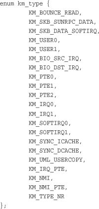
This function does not block and thus can be used in interrupt context and other places that cannot reschedule. It also disables kernel preemption, which is needed because the mappings are unique to each processor. (And a reschedule might change which task is running on which processor.)
The mapping is undone via
void kunmap_atomic(void *kvaddr, enum km_type type)
This function also does not block. In many architectures it does not do anything at all except enable kernel preemption, because a temporary mapping is valid only until the next temporary mapping. Thus, the kernel can just “forget about” the kmap_atomic() mapping, and kunmap_atomic() does not need to do anything special. The next atomic mapping then simply overwrites the previous one.
Modern SMP-capable operating systems use per-CPU data—data that is unique to a given processor—extensively. Typically, per-CPU data is stored in an array. Each item in the array corresponds to a possible processor on the system. The current processor number indexes this array, which is how the 2.4 kernel handles per-CPU data. Nothing is wrong with this approach, so plenty of 2.6 kernel code still uses it. You declare the data as
unsigned long my_percpu[NR_CPUS];
Then you access it as
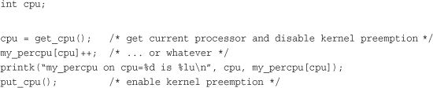
Note that no lock is required because this data is unique to the current processor. If no processor touches this data except the current, no concurrency concerns exist, and the current processor can safely access the data without lock.
Kernel preemption is the only concern with per-CPU data. Kernel preemption poses two problems, listed here:
• If your code is preempted and reschedules on another processor, the
cpuvariable is no longer valid because it points to the wrong processor. (In general, code cannot sleep after obtaining the current processor.)
• If another task preempts your code, it can concurrently access
my_percpuon the same processor, which is a race condition.
Any fears are unwarranted, however, because the call get_cpu(), on top of returning the current processor number, also disables kernel preemption. The corresponding call to put_cpu() enables kernel preemption. Note that if you use a call to smp_processor_id() to get the current processor number, kernel preemption is not disabled; always use the aforementioned methods to remain safe.
percpu InterfaceThe 2.6 kernel introduced a new interface, known as percpu, for creating and manipulating per-CPU data. This interface generalizes the previous example. Creation and manipulation of per-CPU data is simplified with this new approach.
The previously discussed method of creating and accessing per-CPU data is still valid and accepted. This new interface, however, grew out of the needs for a simpler and more powerful method for manipulating per-CPU data on large symmetrical multiprocessing computers.
The header <linux/percpu.h> declares all the routines. You can find the actual definitions there, in mm/slab.c, and in <asm/percpu.h>.
Defining a per-CPU variable at compile time is quite easy:
DEFINE_PER_CPU(type, name);
This creates an instance of a variable of type type, named name, for each processor on the system. If you need a declaration of the variable elsewhere, to avoid compile warnings, the following macro is your friend:
DECLARE_PER_CPU(type, name);
You can manipulate the variables with the get_cpu_var() and put_cpu_var() routines. A call to get_cpu_var() returns an lvalue for the given variable on the current processor. It also disables preemption, which put_cpu_var() correspondingly enables.
get_cpu_var(name)++; /* increment name on this processor */
put_cpu_var(name); /* done; enable kernel preemption */
You can obtain the value of another processor’s per-CPU data, too:
per_cpu(name, cpu)++; /* increment name on the given processor */
You need to be careful with this approach because per_cpu() neither disables kernel preemption nor provides any sort of locking mechanism. The lockless nature of per-CPU data exists only if the current processor is the only manipulator of the data. If other processors touch other processors’ data, you need locks. Be careful. Chapter 9, “An Introduction to Kernel Synchronization,” and Chapter 10, “Kernel Synchronization Methods,” discuss locking.
Another subtle note: These compile-time per-CPU examples do not work for modules because the linker actually creates them in a unique executable section (for the curious, .data.percpu). If you need to access per-CPU data from modules, or if you need to create such data dynamically, there is hope.
The kernel implements a dynamic allocator, similar to kmalloc(), for creating per-CPU data. This routine creates an instance of the requested memory for each processor on the systems. The prototypes are in <linux/percpu.h>:
void *alloc_percpu(type); /* a macro */
void *__alloc_percpu(size_t size, size_t align);
void free_percpu(const void *);
The alloc_percpu() macro allocates one instance of an object of the given type for every processor on the system. It is a wrapper around __alloc_percpu(), which takes the actual number of bytes to allocate as a parameter and the number of bytes on which to align the allocation. The alloc_percpu() macro aligns the allocation on a byte boundary that is the natural alignment of the given type. Such alignment is the usual behavior. For example,
struct rabid_cheetah = alloc_percpu(struct rabid_cheetah);
is the same as
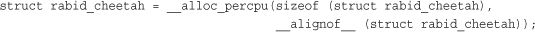
The __alignof__ construct is a gcc feature that returns the required (or recommended, in the case of weird architectures with no alignment requirements) alignment in bytes for a given type or lvalue. Its syntax is just like that of sizeof. For example, the following would return four on x86:
__alignof__ (unsigned long)
When given an lvalue, the return value is the largest alignment that the lvalue might have. For example, an lvalue inside a structure could have a greater alignment requirement than if an instance of the same type were created outside of the structure, because of structure alignment requirements. Issues of alignment are further discussed in Chapter 19.
A corresponding call to free_percpu() frees the given data on all processors.
A call to alloc_percpu() or __alloc_percpu() returns a pointer, which is used to indirectly reference the dynamically created per-CPU data. The kernel provides two macros to make this easy:
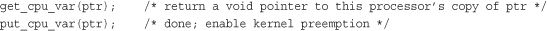
The get_cpu_var() macro returns a pointer to the specific instance of the current processor’s data. It also disables kernel preemption, which a call to put_cpu_var() then enables.
Let’s look at a full example of using these functions. Of course, this example is a bit silly because you would normally allocate the memory once (perhaps in some initialization function), use it in various places, and free it once (perhaps in some shutdown function). Nevertheless, this example should make usage quite clear:
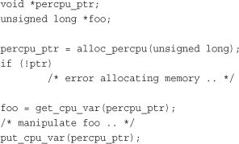
There are several benefits to using per-CPU data. The first is the reduction in locking requirements. Depending on the semantics by which processors access the per-CPU data, you might not need any locking at all. Keep in mind that the “only this processor accesses this data” rule is only a programming convention. You need to ensure that the local processor accesses only its unique data. Nothing stops you from cheating.
Second, per-CPU data greatly reduces cache invalidation. This occurs as processors try to keep their caches in sync. If one processor manipulates data held in another processor’s cache, that processor must flush or otherwise update its cache. Constant cache invalidation is called thrashing the cache and wreaks havoc on system performance. The use of per-CPU data keeps cache effects to a minimum because processors ideally access only their own data. The percpu interface cache-aligns all data to ensure that accessing one processor’s data does not bring in another processor’s data on the same cache line.
Consequently, the use of per-CPU data often removes (or at least minimizes) the need for locking. The only safety requirement for the use of per-CPU data is disabling kernel preemption, which is much cheaper than locking, and the interface does so automatically. Per-CPU data can safely be used from either interrupt or process context. Note, however, that you cannot sleep in the middle of accessing per-CPU data (or else you might end up on a different processor).
No one is currently required to use the new per-CPU interface. Doing things manually (with an array as originally discussed) is fine, as long as you disable kernel preemption. The new interface, however, is much easier to use and might gain additional optimizations in the future. If you do decide to use per-CPU data in your kernel code, consider the new interface. One caveat against its use is that it is not backward compatible with earlier kernels.
With myriad allocations methods and approaches, it is not always obvious how to get at memory in the kernel—but it sure is important! If you need contiguous physical pages, use one of the low-level page allocators or kmalloc(). This is the standard manner of allocating memory from within the kernel, and most likely, how you will allocate most of your memory. Recall that the two most common flags given to these functions are GFP_ATOMIC and GFP_KERNEL. Specify the GFP_ATOMIC flag to perform a high priority allocation that will not sleep. This is a requirement of interrupt handlers and other pieces of code that cannot sleep. Code that can sleep, such as process context code that does not hold a spin lock, should use GFP_KERNEL. This flag specifies an allocation that can sleep, if needed, to obtain the requested memory.
If you want to allocate from high memory, use alloc_pages(). The alloc_pages() function returns a struct page and not a pointer to a logical address. Because high memory might not be mapped, the only way to access it might be via the corresponding struct page structure. To obtain an actual pointer, use kmap() to map the high memory into the kernel’s logical address space.
If you do not need physically contiguous pages—only virtually contiguous—use vmalloc(), although bear in mind the slight performance hit taken with vmalloc() over kmalloc(). The vmalloc() function allocates kernel memory that is virtually contiguous but not, per se, physically contiguous. It performs this feat much as user-space allocations do, by mapping chunks of physical memory into a contiguous logical address space.
If you are creating and destroying many large data structures, consider setting up a slab cache. The slab layer maintains a per-processor object cache (a free list), which might greatly enhance object allocation and deallocation performance. Rather than frequently allocate and free memory, the slab layer stores a cache of already allocated objects for you. When you need a new chunk of memory to hold your data structure, the slab layer often does not need to allocate more memory and instead simply can return an object from the cache.
In this chapter, we studied how the Linux kernel manages memory. We looked at the various units and categorizations of memory, including bytes, pages, and zones. (Chapter 15 looks at a fourth categorization, the process address space.) We then discussed various mechanisms for obtaining memory, including the page allocator and the slab allocator. Obtaining memory inside the kernel is not always easy because you must be careful to ensure that the allocation process respects certain kernel conditions, such as an inability to block or access the filesystem. To that end, we discussed the gfp flags and the various use cases and requirements for each flag. The relative difficulty in getting hold of memory in the kernel is one of the largest differences between kernel and user-space development. While much of this chapter discussed the family of interfaces used to obtain memory, you should now also wield an understanding of why memory allocation in a kernel is difficult.
With this chapter under our belt, the next chapter discusses the virtual filesystem (VFS), the kernel subsystem responsible for managing filesystems and providing a unified, consistent file API to user-space applications. Onward!